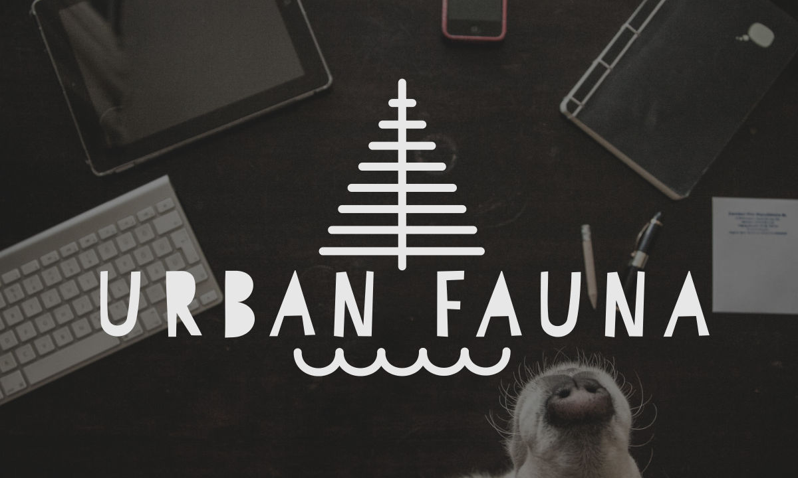
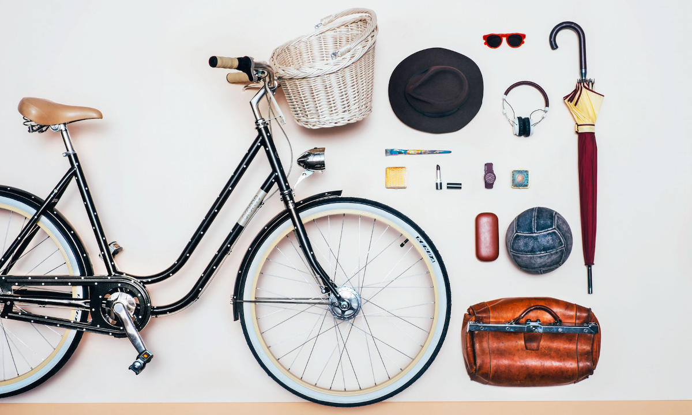

Budapest based maker, web developer, bike nerd - currently looking for a job as a web developer. Interested in front end and connected devices.
Want to learn some serious JavaScript and I believe that most work should be done in browsers.
Have a look at my pet projects and drop me a line if you think you could make good use of me!
Brain Farts
Hányfokvan?

An IoT thermometer, logging the temperature of my room. If nothing else, it is a neat thing to show to random people in random bars.
It started with me not having a thermometer at home, and figuring it would take less time to build this than to go out and buy a thermometer, as I had all the necessary gadgets lying around.
Pixframe

It's a custom made LED matrix displayed in a public space, the pattern on which can be controlled from a publicly accessible web app.
It's real-time, it can be built in any size and any resolution, and manipulated by any amount of people at the same time. The current version was built with the help and sponsorhip of FabLab Budapest
It is a fun fusion of doodling, tic-tac-toe and a mood light.
Urban Fauna Web

The webpage of Urban Fauna, an up-and-coming video production company.
A lot of HTML5 video, fully custom layout designed to be enjoyable on both mobile and desktop.
PizzaPhone

It's a rotary phone (remember those?) converted into an alarm clock. Tells you the time and current settings if you pick it up and you can dial in new settings.
If you ever used one of these for reals, it'll give you the fuzzy feels and annoy the hell out of you at the same time, as it was made to be as inefficent as possible by today's standards.
Its voice makes you think of bad TV commercials. Thank hyperdunno for providing it.
Velo Kún

A soon-to-be bike store, that will make its debut as a webshop. It will be a bit different to most webshops out there as it will cater to local cyclists only (Budapest), there will be an emphasis on sharing knowledge and experience, and meeting up with potential customers.
Sounds weird? It might be. But we're experimenting with new ways of selling online and we might just pull it off.